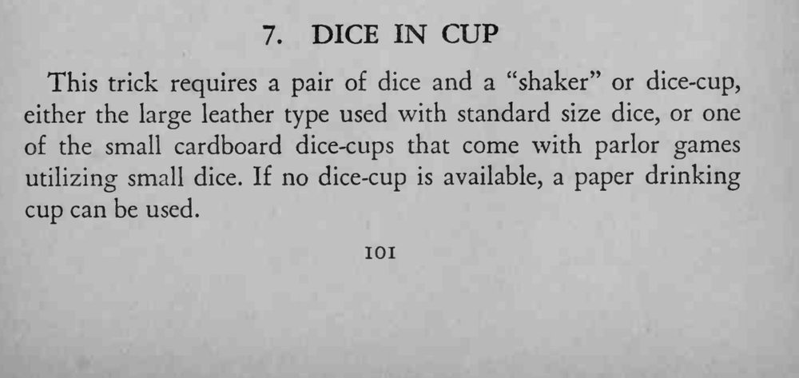
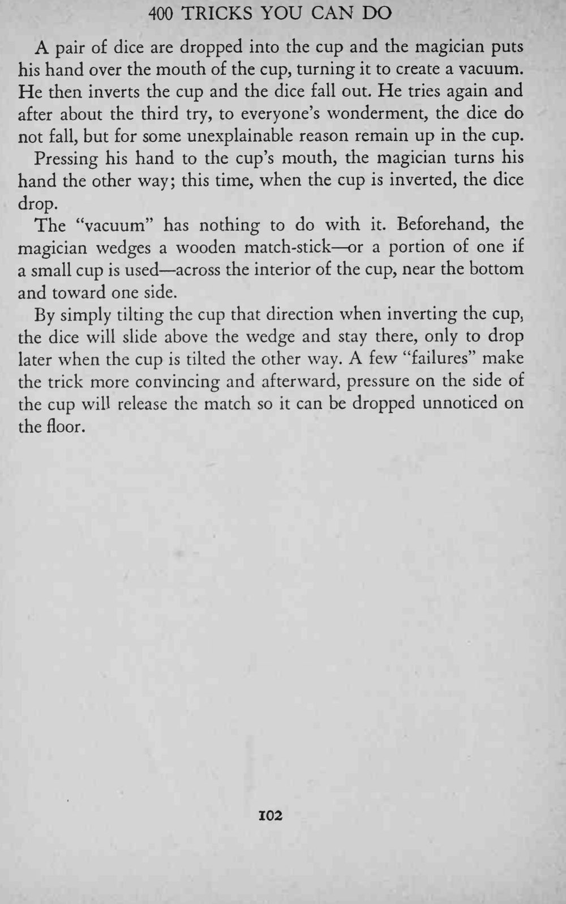
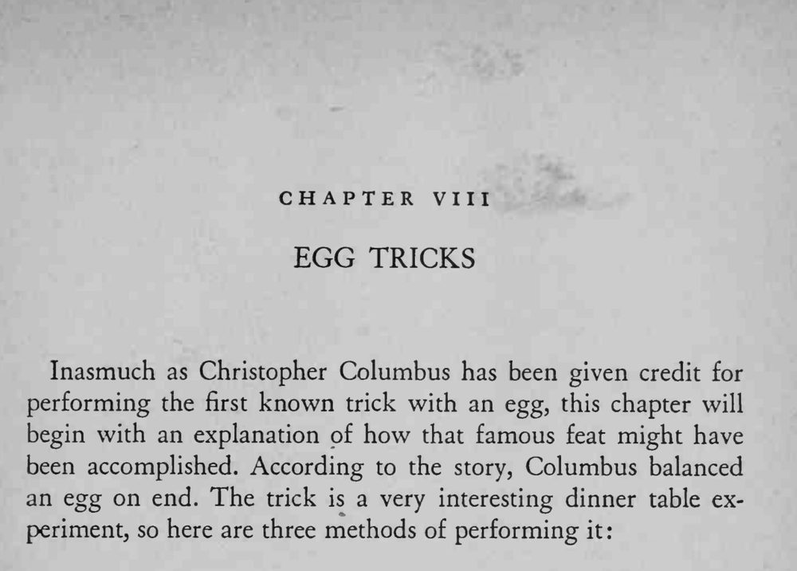

骰子装进杯中倒出来，几次之后骰子却像被吸住一样留在杯里；再翻一次，骰子又掉出来。
火柴卡在近杯底的一侧，倾斜方向决定骰子卡住还是掉落；动作要自然，别让火柴露出来。



This trick requires a pair of dice and a "shaker" or dice-cup, either the large leather type used with standard size dice, or one of the small cardboard dice-cups that come with parlor games utilizing small dice. If no dice-cup is available, a paper drinking cup can be used. A pair of dice are dropped into the cup and the magician puts his hand over the mouth of the cup, turning it to create a vacuum. He then inverts the cup and the dice fall out. He tries again and after about the third try, to everyone's wonderment, the dice do not fall, but for some unexplainable reason remain up in the cup. Pressing his hand to the cup's mouth, the magician turns his hand the other way; this time, when the cup is inverted, the dice drop. The "vacuum" has nothing to do with it. Beforehand, the magician wedges a wooden match-stick or a portion of one if a small cup is used across the interior of the cup, near the bottom and toward one side. By simply tilting the cup that direction when inverting the cup, the dice will slide above the wedge and stay there, only to drop later when the cup is tilted the other way. A few "failures" make the trick more convincing and afterward, pressure on the side of the cup will release the match so it can be dropped unnoticed on the floor. Inasmuch as Christopher Columbus has been given credit for performing the first known trick with an egg, this chapter will begin with an explanation of how that famous feat might have been accomplished. According to the story, Columbus balanced an egg on end. The trick is a very interesting dinner table experiment, so here are three methods of performing it